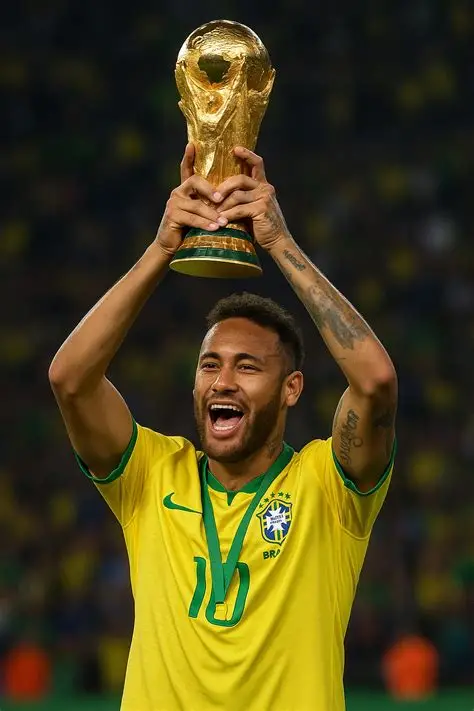
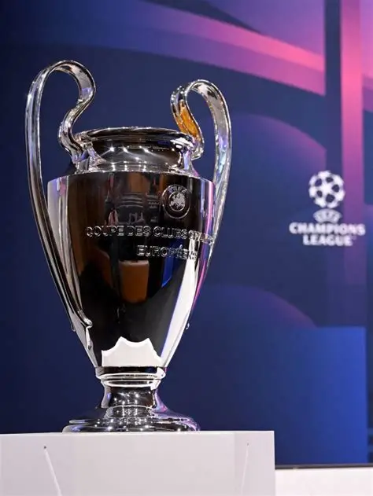
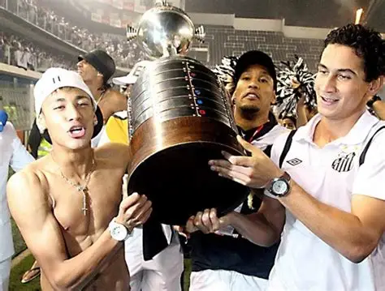
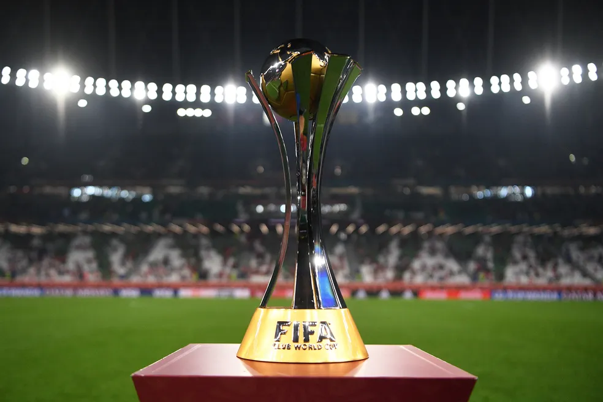
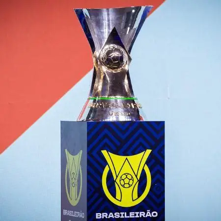
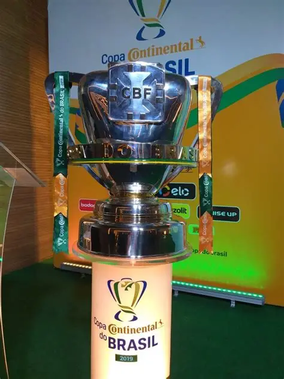
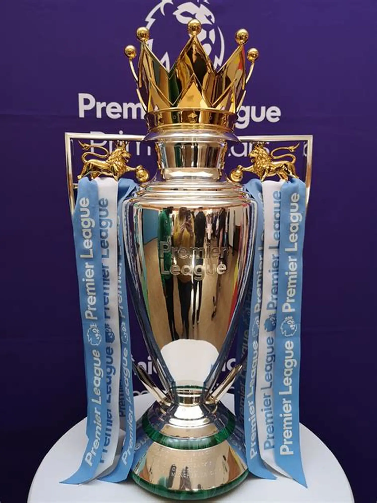

Principais Competições de Futebol
O futebol possui campeonatos famosos em todo o mundo, reunindo clubes e seleções que disputam títulos e levam milhões de torcedores aos estádios e às telas. Conheça as principais competições.
Copa do Mundo FIFA

Principal torneio entre seleções nacionais, realizado a cada quatro anos. Reúne as melhores seleções do planeta e é o evento esportivo mais assistido do mundo. O Brasil é o país com mais títulos, com cinco conquistas.
UEFA Champions League

Principal competição de clubes da Europa, disputada pelos melhores times de cada país do continente. É considerada o torneio de clubes mais prestigiado do mundo.
Copa Libertadores da América

Maior competição de clubes da América do Sul, organizada pela CONMEBOL. O campeão representa o continente no Mundial de Clubes.
Mundial de Clubes da FIFA

Competição organizada pela FIFA que reúne os melhores clubes de cada continente para decidir quem é o campeão mundial. A partir de 2025, o torneio passou a ter um novo formato, com 32 equipes, e será disputado a cada quatro anos.
Campeonato Brasileiro - Série A

Principal campeonato de futebol do Brasil, disputado em pontos corridos por 20 clubes ao longo do ano.
Copa do Brasil

Torneio de mata-mata que reúne clubes de todo o país, de todas as divisões. É conhecido pelas grandes zebras e pelas surpresas.
Premier League

Campeonato inglês de futebol, um dos mais competitivos e mais assistidos do mundo, com os maiores nomes do esporte.
Resumo das competições
| Competição | Tipo | Região |
|---|---|---|
| Copa do Mundo FIFA | Seleções | Mundial |
| UEFA Champions League | Clubes | Europa |
| Copa Libertadores | Clubes | América do Sul |
| Mundial de Clubes da FIFA | Clubes | Mundial |
| Campeonato Brasileiro | Clubes | Brasil |
| Copa do Brasil | Clubes | Brasil |
| Premier League | Clubes | Inglaterra |